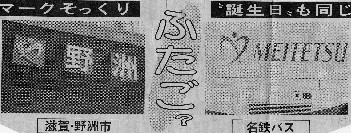
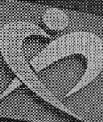
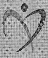

Free talk 雑談。
（267）登録マーク .
11/04（金）の中日新聞に、滋賀県野洲（やす）市の市章と名古屋鉄道の社章がそっくりだという記事が載っていた。

これではわかりにくいので拡大すると、こんな感じ。
 
野洲（やす）市 名古屋鉄道
野洲市は平仮名の「や」をベースに「人」を、 名古屋鉄道はアルファベットの「Ｍ」をベースに「人」をデフォルメしたものだとか。＃名古屋鉄道の頭文字はＮであるが、通称がメイテツなのでＭとなっている。 別にどちらかが怒っているという話ではなくて、偶然の一致とはいえ面白いという感じの記事。
市章と社章なので、いうなら他人の空似。似ていても、大勢に影響はない。しかしコレ↓なんか全体のデザインどころか配色まで似ている。そこでチラ見だと、ホントに錯覚する。しかも両方とも、不動産団体の登録商標。
ウサギマークは、ハトマークよりずっと後にデザインされた。どう考えてもマネしたとしか思えない。とはいえ、これもハトマーク側は別に文句を云ってないのでいいけどさ。
もっともウサギより先に出来たハトマークにしても、チラ見だとコレとよく似ている。